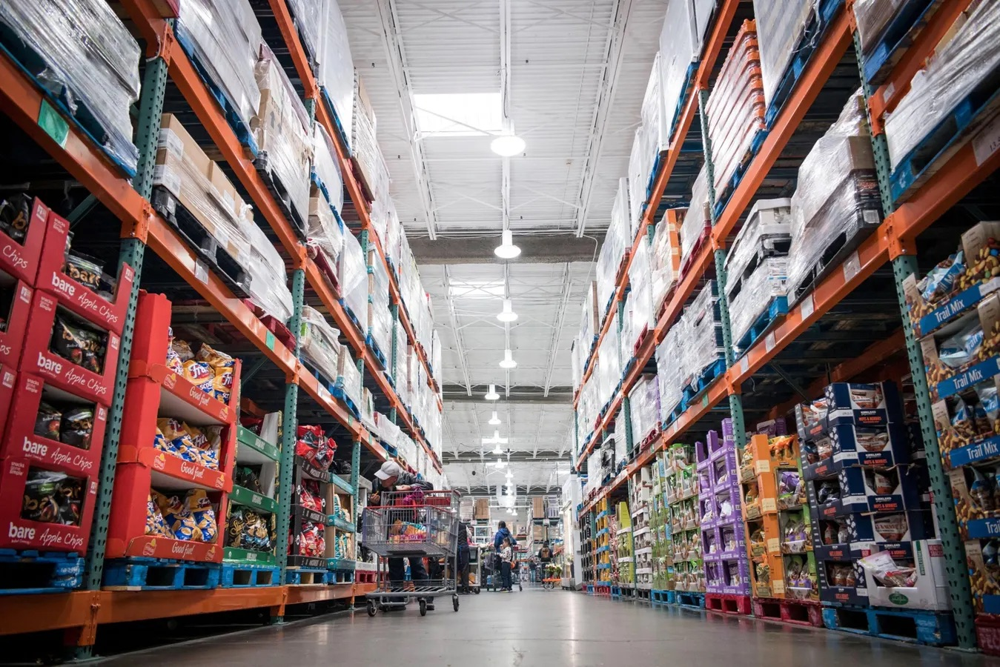

Conclusions/Suggestions
Costco is known for its bulk groceries, low prices, and loyal members. It offers various products at prices that often beat traditional retailers. This made us curious about how much price influences how customers rate the products they buy and the type/price of the products too.
Our project set out to analyze how Costco’s pricing and product structure relate to customer satisfaction. As we explored Costco’s online grocery offerings through a series of visualizations, we began by looking at which product categories are most heavily represented. It quickly became clear that items like Snacks, Pantry Goods, and Candy dominate the selection, while fresh or perishable categories such as Deli and Poultry appear far less frequently. This likely reflects the convenience and advantage of shipping non-perishable goods in bulk, especially in an online setting. Starting with this view helped us understand where most customer engagement and feedback are concentrated, setting the stage for a deeper look into how pricing and satisfaction play out.
From there, our heatmap broke down how products in each subcategory are distributed across price ranges. With a Costco themed blue color palette, it revealed a clear divide between everyday essentials and premium offerings. Categories like Snacks and Candy clustered in the under $30 range, while Organic and Meat & Seafood products were more common at higher price points. This aligned with what many shoppers already experience: Costco is a place to find great deals on basics, but it also offers high-end goods for those looking to stock up on premium items.
The boxplot visualization gave us an even closer look at how customer ratings relate to price. What stood out was that products priced between $15 and $50 tend to receive the most consistent and highest rating, and this is the sweet spot for value and satisfaction. When we compared full-price and discounted items in our density plot, we found that full-price products generally maintain higher, more consistent ratings. However, many discounted items still performed well, just with a bit more variation meaning that while deals are out there, it’s worth taking a moment to read reviews.
Lastly, our Tableau dashboard offered a different angle by showing how food marketing terms like “organic” and “gluten-free” show up across price points. Interestingly, these terms aren’t limited to high-end products; they appear across lower price tiers as well, suggesting that healthy or specialty options can still be affordable at Costco.
All of this comes together to offer some helpful guidance for shoppers: if you’re looking for reliability and quality, focus on mid-range products in categories like Coffee, Snacks, and Pantry Goods. Discounts can lead to good finds, especially in high-turnover categories, but it’s smart to check ratings first. And if you’re shopping for health-conscious items, don’t assume you need to spend more since many of these options are available at lower prices. With the help of visual tools like these, it’s easier to shop smart and make informed decisions that balance quality, value, and personal preference. To build on these findings, future analyses could incorporate the number of reviews per product to assess rating reliability. Segmenting ratings and prices by product subcategories also uncover which categories offer the best value and satisfaction.
